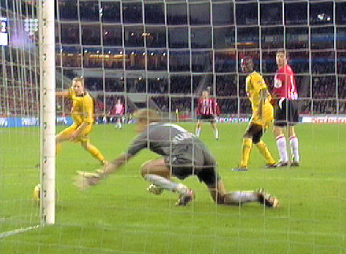
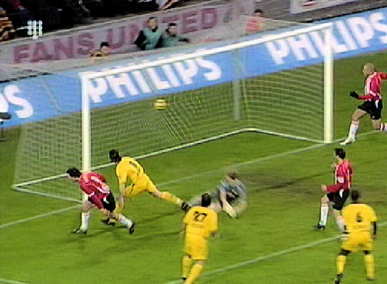

|
PSV
- Roda JC (3-2) 4 februari 2006
|
De spelers komen het veld op. De Roda-supporters mogen, weggemoffeld
in een uithoek van het stadion, door een net heen kijken.
Zwaar irritant.
De ongekende gastvrijheid van het Brabantse land....
Niettemin, sfeer in het Roda-vak.
De Tifosi van PSV. (foto:Rik vd Elzen)
Kevin Begois mag alweer meedoen aan de warming-up maar daar bleef het
dan ook bij. (foto:Rik vd Elzen PSVJeugd.nl/PSVWorld.nl)
Cziommer, Oper en Cissé. (foto:Rik vd Elzen PSVJeugd.nl/PSVWorld.nl)
Er wordt gespeeld met een fraai gele bal. (foto:Rik vd Elzen)
De wedstrijd is nauwelijks aan de gang als Cziommer een prachtig schot
lanceert dat doel treft: 0-1, (3').
Gomes ziet de bal inslaan.
Cziommer wordt bedolven onder de felicitaties.
(foto:Rik vd Elzen)
Een pass van Cissé op Sergio wordt door de Brazilliaan via de linkerpaal
tot doelpunt gepromoveerd: 0-2, (5').
Een ongekende luxe!
Na een vrije trap voor PSV maakt Lachambre dom hands: penalty PSV.
Jan Vennegoor of Hesseling legt de bal klaar. (foto:Rik
vd Elzen)
Kujovic duikt nog wel naar de goede hoek maar het schot van VoH is te
hard: 1-2, (7').
Van Dijk die de hele wedstrijd ruw speelt gaat op de bon na een flinke
overtreding op Afellay (rechts).
Protesteren bij Van Egmond heeft geen zin.

Het fluisterstille Philipstheater schrikt op wanneer Afellay een schot lost dat
via de voet van Lachambre op de paal belandt.
Op slag van rust wordt een zuivere handsbal van VoH door Van Egmond
onbestraft gelaten.
Talpa bracht de Josti's van PSV regelmatig in beeld.
Slome duikelaar Farfan gaat theatraal onderuit na een correcte sliding van
Kah.
De lamp rechts, (is het Peppie of is het Kokkie?), probeert Kah een kaart
aan te smeren.

Vicelich laat VoH onbewaakt. Deze scoort uit de onterecht gegeven vrije
trap: 2-2, (53').

In de 61e min. krijgt Van Dijk zijn tweede, dus rode kaart. Exit Gregoor...
Met tien man is er voor Roda geen eer meer te behalen. Stevens haalt
Cziommer, Bodor en Saijs naar de kant ten gunste van Colinet, Voigt en
Rompelberg (foto:Rik vd Elzen)
Via een gelukje krijgt invaller Aissati de bal voor zijn voeten: 3-2, (65').
In de slotfase maakt Aissati bijna zijn tweede doelpunt. Zijn schot belandt
echter op de paal.
Wat als een feest begon eindigt in een teleurstelling.
(foto:Rik vd Elzen)
Sergio maakt nog een praatje met landgenoot Gomes. (foto:Rik
vd Elzen)
Roda scoort als eerste club twee maal in het Philips Theater maar schiet
daar helaas niks mee op. In de komende wedstrijden zal een sterke serie
driepunters neergezet moeten worden om de plee-offs te kunnen bereiken.
Daarnaast is Roda nog in de race voor de beker.
© Koempels Pleasure Dome
|